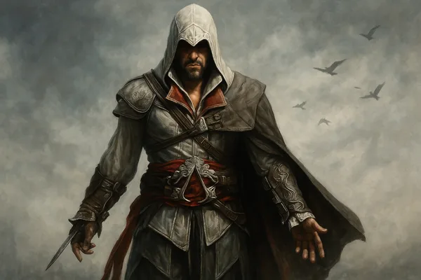
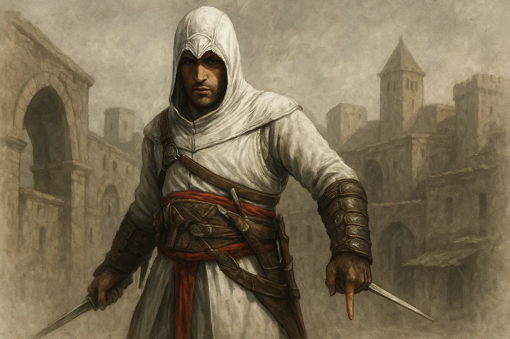
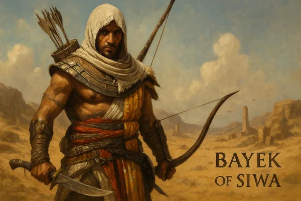
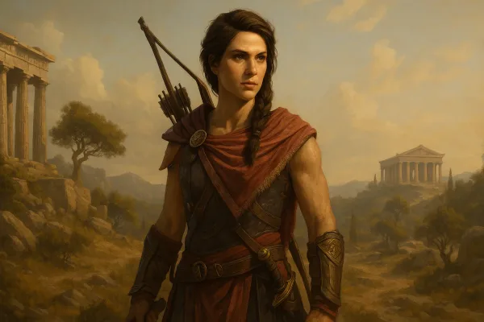
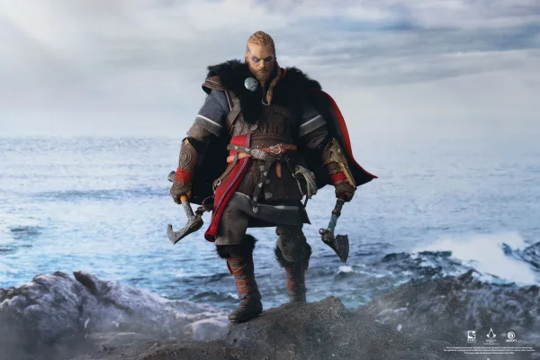
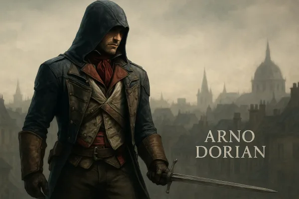
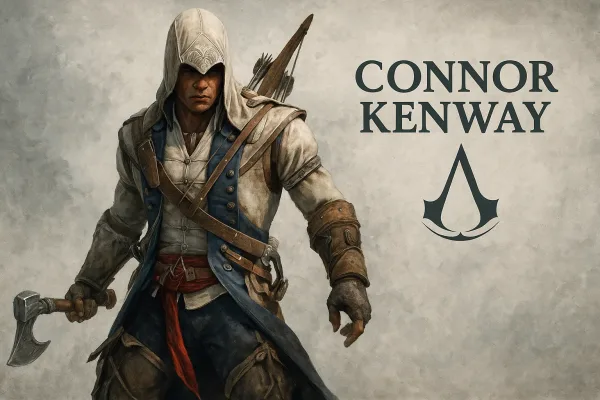
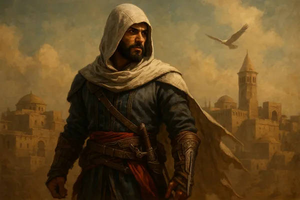
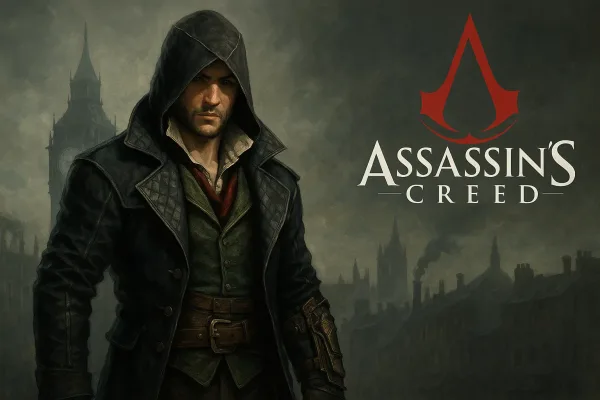
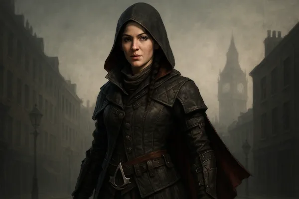

Synchronizing...
Synchronizing...

The most celebrated Assassin in history. Born into nobility, Ezio's life changed when his family was betrayed. He became a Master Assassin, rebuilt the Brotherhood, and discovered the secrets of the First Civilization.

The legendary Syrian Assassin who reformed the Brotherhood. After his arrogance led to failure, Altaïr redeemed himself and revolutionized the Creed, creating the foundation for future generations.

The first Hidden One and founder of the Brotherhood. A Medjay protector seeking vengeance for his son, Bayek established the order that would become the Assassins, fighting against the Order of the Ancients.

A legendary Spartan misthios and wielder of the Staff of Hermes Trismegistus. Kassandra fought against the Cult of Kosmos and lived for over 2,400 years, protecting humanity from the shadows.

A fierce Viking warrior and reincarnation of Odin. Eivor led the Raven Clan to England, allied with the Hidden Ones, and fought against the Order of the Ancients while building a new settlement.

A French Assassin seeking redemption and justice. After his adoptive father's murder, Arno joined the Brotherhood to uncover a conspiracy that threatened to tear France apart during its bloodiest revolution.

A half-Mohawk, half-British Assassin who fought for freedom during the American Revolution. Connor sought to protect his people and ideals, becoming a pivotal figure in America's birth as a nation.
A Welsh pirate turned Assassin. Initially driven by greed, Edward's adventures in the Caribbean led him to understand the Assassin cause, eventually becoming a Master Assassin and father to Haytham.

A cunning Hidden One and reincarnation of Loki. Basim's quest for answers about his past led him from Baghdad to Valhalla, where he discovered his true nature and manipulated events across centuries.
The Assassin who became a Templar. After witnessing the Brotherhood's reckless pursuit of Precursor artifacts causing destruction, Shay defected and hunted his former brothers to prevent further catastrophes.

A charismatic and impulsive Assassin who liberated London from Templar control. Jacob founded the Rooks gang and, alongside his twin sister Evie, dismantled Crawford Starrick's criminal empire.

A master of stealth and intelligence. Evie's methodical approach complemented her brother's brashness. She sought the Shroud of Eden while helping liberate London, proving herself as one of the Brotherhood's finest.